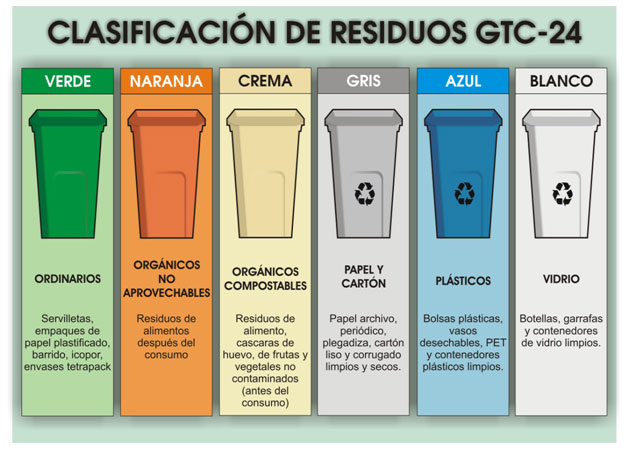

¿Qué es?
consiste en obtener una nueva materia prima o producto, mediante un proceso fisicoquímico o mecánico, a partir de productos y materiales ya en desuso o utilizados. De esta forma, conseguimos alargar el ciclo de vida de un producto, ahorrando materiales y beneficiando al medio ambiente al generar menos residuos.
¿Comó se clasifica?
Contenedor azul: papel y cartón
Qué debemos depositar:
Periódicos, libros, sobres, revistas y otros papeles.
Bolsas y envases de papel, cajas de cartón, que deben plegarse antes de depositarlas.
Hueveras de cartón.
Qué NO debemos depositar:
Envases mixtos de papel y plástico, bricks.
Papeles muy sucios, como los de cocina usados o manteles de papel.
Corcho blanco
Contenedor amarillo: envases y plásticos
Qué debemos depositar:
Envases tipo brick (leche, zumos…).
Botes, latas y envases metálicos.
Botellas, garrafas, tapones y otros envases de plástico.
Aerosoles y sprays.
Papel de aluminio y film.
Bandejas de carne o fruta de corcho blanco (forespan o porexpan).
Redes de la fruta o patatas.
Guantes de goma (“de fregar”).
Qué NO debemos depositar:
Botes de pintura o productos químicos.
Contenedor verde: cristal y vidrio
Qué debemos depositar:
Botellas de vidrio.
Tarros y frascos de conservas.
Jarras y copas de vidrio.
Qué NO debemos depositar:
Tapones de botellas y botes.
Fluorescentes y lámparas.
Espejos o cristales de ventanas.
Botes de medicamentos.
Botes que hayan contenido productos tóxicos o peligrosos
Contenedor marrón: orgánica
Qué debemos depositar:
Restos de comida.
Huesos y pieles de frutas y hortalizas.
Posos y filtros de café.
Sobres de infusiones.
Cáscaras de marisco y moluscos.
Tapones de corcho.
Cáscaras de huevo.
Papel de cocina y servilletas de papel utilizadas.
Restos de plantas y flores.
Cáscaras de frutos secos.
Palillos.
Cerillas.
Qué NO debemos depositar:
Aceite de cocina.
Residuos de barrer.
Colillas.
Pañales y productos de higiene femenina.
Excrementos de animales
Contenedor verde oscuro o gris: resto o desechos
Qué debemos depositar:
Residuos de barrer.
Colillas.
Pañales y productos de higiene femenina.
Cuchillas de afeitar
Cepillos de dientes.
Chicles.
Bolsas de aspiradora
Fregonas y bayetas
Excrementos de animales.
Qué NO debemos depositar:
Juguetes.
Pilas.
Ropa



 2
2


 2
2 3
3 4
4